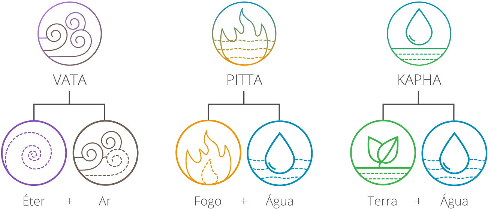

Os Doshas na Ayurveda
Os doshas são os biotipos da ayurveda. A ciência identificou 3 grupos de características físicas e psicológicas associadas a energias que coexistem em cada indivíduo, os 3 doshas: Vata, Pitta e Kapha.
Cada dosha é formado por uma combinação de dois elementos e associado a um determinado princípio.

Vale destacar que todos os seres têm os 3 doshas e, em cada ser, eles se expressam com mais ou menos intensidade. Para encontrar o equilíbrio, a ideia não é igualar a expressão dos doshas, mas alinhar, conforme a energia original de cada pessoa.
Somado a isso, as condições físicas, genéticas, emocionais e de estilo de vida são situações que interferem na expressão dos doshas em cada indivíduo. Assim, cabe ao profissional ayurvédico identificar os doshas do paciente, os possíveis desequilíbrios e indicar o tratamento adequado para reequilibrar as energias. Esse é o caminho da ayurveda para prevenir doenças ou apoiar processos de cura.
Clique para descobrir seu Dosha